Индейский Новый Год 2009
- 31 декабря 2008 - 4 января 2009 -
 Как
обычно решили мы отметить Новый Год необычно - по-индейски на Мамае :) Как
обычно решили мы отметить Новый Год необычно - по-индейски на Мамае :)
Так что утром 31-го декабря, приехав на электричке и топая по ратраченной
дороге, несли в рюкзаках кроме праздничных закусок и огненой воды, еще
и разноцветные перья, бусы, амулеты, краску для праздничной раскраски
и музыкальные инструменты для ритуальных плясок :) После обеда в вигваме
"Наша Маша", какой-то безответствено-ленивый индеец предложил
поспать и большинство согласилось. Выспались. Стемнело. До 12-ти еще оставалось
часов 6, вполне достаточно на все приготовления, наряжания, тренировочное
выпивание и битье в бубен :)
Теперь самое время огласить состав племени:
Лёха - (забыл как там меня назвали, кажется что-то
типа Великий Вождь или Великий Шаман), а на самом деле - тот самый "безответственно-ленивый
индеец" :) А, вспомнил - Спящий Сурок !!!
Оля - Сладкая Медведица, могла бы получить приз за лучший костюм,
но мы про такой конкурс забыли :)
Таня - Огненная Лиса, или FireFox :)
Андрюха - Братец Якудза, по совместительству - Самурай :)
Вовочка - не помню, было ли у него индейское имя, но раскраска
на лице была самая индейская :)
Дима - тоже неплохо накрасился :)
Оксана и Саша - выкопали яму, натаскали дров и развели костер,
в то время пока все настоящие индейцы и скво спали :) зачет и уважуха!
Поздно вечером пришла Вера, Комар и Женя. Ну и остались
с нами встречать НГ !
В 12-м часу заглянула к нам на огонек компания из соседнего
вигвама - Костя Шишкин, Денис Бек, Андрюха с Женей, Наташа, Аня, Оля,
Миша. И не просто так заглянули, а проводили вместе с нами старый 2008-й
год :)
Ну в общем, к 12-ти часам все было очень хорошо и замечательно
- девушки сделали богатый и красивый праздничный стол, Вовочка ёлку нарядил
старыми детскими игрушками, возле костра были уже совсем хорошие Саша,
братец Якудза и Спящий Сурок - сильна гремучая смесь огненной воды, бубна
и варгана!
12 часов - по традиции бледнолицых бабахнули шампанским
и фейерверком, поздравили друг друга, поплясали вокруг костра и вокруг
ёлки и пошли поздравлять соседей с Новым Годом! Да что-то там и затусили
на полночи... Я потом долго понять не мог, а чего это мы в своем вигваме
Новый Год не отмечаем?! У нас и стол накрыт, и музыка есть, и подарки
лежат неподаренные, да и вообще культурно-индейская программа типо должна
была быть... Ну вот так получилось :) Не, мы конечно клёво потусили у
соседей, там и комнания дружественная и Костя с гитаркой, да и вообще
были веселые и приятные моменты, и есть что вспоминить, но не могу понять
- как так быстро время пролетело... :)
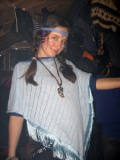
- 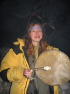
- 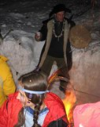
- 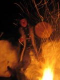
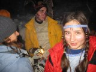
- 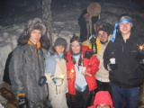
- 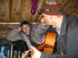
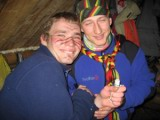
- 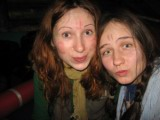
- 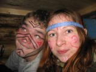
- 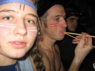
1 января нового года. Саша и Оксана во вчерашнем
похождении к соседям участия не принимали, поэтому проснулись рано, развели
костер и наварили чай. Такие люди нам ой-как-нужны :) Постепенно все расшевелились,
попили чай, немного огненной воды, опять чай, поели торт. Пришла Вера,
потом Братец Якудза притащился, спасибо духам - немного живой :) Мы все
утро за него переживали, он же вчера больше всех выпил, потом один ушел
ночевать в свой вигвам, а сегодня ничего и не помнит с прошлого года :)
Я, Оля и Таня собрались покататься с Трех Берез, Дима с
нами пошел прогуляться, а Оксана и Саша сегодня решили домой поехать.
Вовочка спал почти весь день :) Да, Самурай и Вера с парнями тоже сегодня
уехали домой.
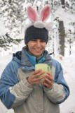
-
- 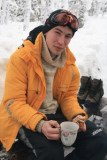
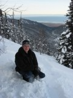
- 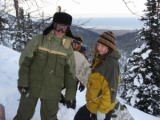
- 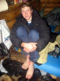
Дима - кадр еще тот :) Сходил с нами на Три Березы,
в обычных городских ботинках,
без фонариков, в джинсах, все ноги промочил и заморозил,
но зато в его коллекции появилось несколько фото "Я и Мамай"
:) Молодец :)
Оставили Диму и Вову хозяйничать и пошли еще покататься
с Трех Берез. Покатались. На ощупь. Катающиеся в темноте, блин :) Зато
тонкий месяц над Мамаем красиво висел...
Интеллектуальный вечер. Каждый загадывал всем хитрую загадку,
первый отгадавший получал новогодний подарок из красного мешка. И так
получилось, что все получили по подарку! Потом пришли гости, появились
еще более хитрые загадки, ну и параллельно отмечали Новый Год :)
Загадки все не помню, были такие: "Вупи-вупи-вупи-вууууп!",
"Бэнг-бэнг, шют-шют!", "На мосту", "Про 50гр
из бутылки шампанского", "Про свечу в окне", "Про
пилота самолета"...
2 января нового года. Спалось по привычке лениво-лениво
:) Пошли втроем на Мамай - Таня, Оля и я. Поднялись наверх на закате.
Красиво. Поехали в Северный Цирк. Оля у нас новичек. Сильно устала бороться
со снегом. Получила боевое крещение - разбила подбородок об коленку. В
темноте добрались до зимовья байкальчан, посидели немного у них, позвали
к себе в гости.
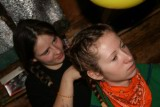
- 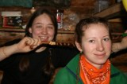
Оля и Таня с косичками :)
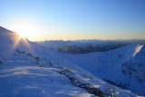
- 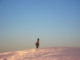
- 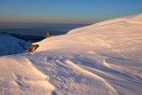
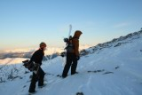
- 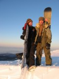
-
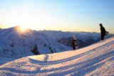
- 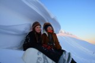
- 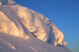
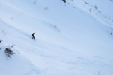
- 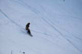
Вовочка всё глинтвейн порывался сварить, но вино как-то
и так хорошо выпивалось :) Пришли байкальчане - Космос, Алёна, Юра, Артем
- стали пить что покрепче, благо запасы еще были. И вот тут-то и случилась
"Чипи-Чипи"... И пошло поехало !!!
Хотя не все так сразу, кажется сначала была "сопливая бразильская
попса", в ходе которой у многих открылись таланты хлопания в ладоши
под музыку и отстукивания зажигательных ритмов японскими палочками. Да,
точно, потом еще была "Ми морена де Ми Корасон" и уже потом
нашли "Чипи-Чипи". И всем сорвало крышу на этой латино-мамайской
вечеринке:) Пели и орали песни на испанском :) Танцевали сначала сидя
на лавочках, да так, что зимуха подпрыгивала. Потом возле печки танцевали.
Потом на улице. Потом опять в зимухе. И так по кругу :) Чипи-Чипи-О-О,
Корасон и Амор :) Водка с бальзамом, самогон с бальзамом, что-то вообще
непонятное, но тоже с бальзамом - выпили все запасы ! :)
В самый разгар веселья пришли Марина, Ульяна и Никита :)
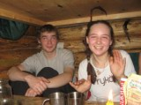
- 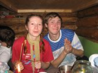
- 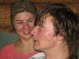
- 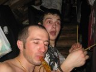
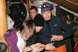
- 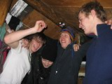
- 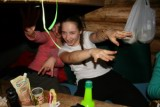
- 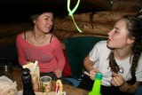
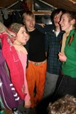
- 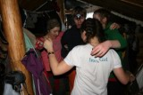
- 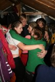
- 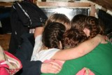
- 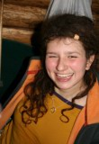
Горячие латинские танцы в зимней тайге... Да уж, бурная
ночь была...
Ну дык, это же - Чипи-Чипи :)
3 января нового года. Разбудил нас Лёха Пестов, он
с электрички пришел, а с ним еще Эмиль, Рост и еще 2 туриста. Сегодня
катались я, Таня, Никита и Вовочка, который сегодня был вместо Оли (её
от сноуборда уже тошнит :). Ульяна на учебке с читинцами тренировалась.
Лёха с ребятами раскатал Высокий цирк. Мы с гребня по Центральному - всё
клёво :) Потом еще на учебке катались и прыгали немного. Марина и Дима
сегодня уехали домой.
Вечером снова отмечали Новый Год :) Ну дык, Лёха же пришел,
Ульянка и Никита, с ним же еще не отмечали!!! А, еще читинцы потом подошли!
Гвоздем вечеринки стало внезапное купание Ульянки и Лёхи в снегу! :) Улька
аж два раза народ шокировала :) Зачет и уважуха по полной программе!!!
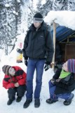
- 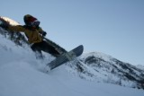
- 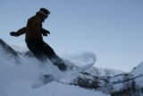
- 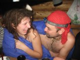
4 января нового года. Вчера и сегодня рано утром
заходил Костя с предложением раскатать склон в сторону Осиновки. Собрались
он, Сигл, Андрей и Саня. Я и Лёха от такого заманчивого предложения отказались,
дали им свои биперы и пожелали Удачи.
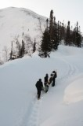
-
- 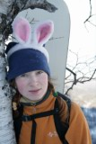
- 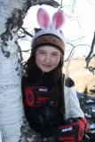
-
Мы сегодня планируем выходим, так что нам далеко не надо.
Пошли я, Оля, Таня и Никита. Потом Лёха догнал. Вышли на Гребень. Таня,
Оля и Никита решили поехать от туда, откуда и вчера стартовали, да и я
тоже на вчерашнюю точку пошел, которая была подальше и повыше. Ветер сильный,
вчерашнии следы почти все задуло. Ребята стартанули раньше, мы еще поднимались
с Лёхой. Поднялись, выхожу на край гребня и вижу язык лавины, как раз
там, где мои поехали! Потом разглядел, что все втроем сидят выше оторвавшейся
доски. Покричали, договорились, чтобы они ждали и ехали после нас. Пока
Лёха встегивался, я на варгане поиграл, духов попросил, чтобы они с нами
подобрее были :)
Поехал, снег по сравнению со вчерашним намного жестче, а местами такой
же мягкий. Гоню как обычно, на скорости, подрезаю склон траверсом, еду
к своим. Тут бесшумно еще одна доска за мной отрывается и спокойно так
сходит вниз. Я остановился, сел на жопу. Лавина сошла до выполаживания
и останавилась. Ну типа как осов свежего снега по весне на Тальце сходит,
примерно также, только тут конкретная снежная доска, котороя трескается
кусками и всё такое. Ну и че дальше-то сидеть, поехал между этими двумя
языками, доехал до перегиба и нашим помахал. Стою, жду, фотаю. Все благополучно
спустились. Обменялись впечатлениями - первая с гребня Танюха стартанула,
она и сорвала доску, отъехала в сторону, потом Оля с Никитой спустились
и нас стали ждать. Ладно, едем дальше. Тут я опять срываю доску, чуть
пониже перегиба. Третья. Опять без грохота, слегка жутковато сходит и
останавливается. Сфотографировались на ней :) Дальше едем. Тут уже из-под
Танюхи еще одна маленькая сходит, четвертая :) Уже весело становится :)
А потом ничего - доехали до кунга...
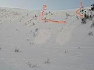
1-я и 2-я лавины
Линиями показано, где ехали Таня и я
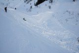
Третья лавина
Таня и четвертая :)
-
-
Ну и все, пора домой, хватит - горные духи нас уже выгоняют! Да и так-то
уже пятый день на Мамае зависаем, кое-кого тошнит уже от таких новогодних
каникул и такого фрирайда :) А Лёха, Ульяна и Эмиль еще остались, у них
еще все впереди!
Вовочка и Никита
 -
-  -
- 
Ульяна. Оля верхом на Никите :) Фотографии Эмиля Альмухомедова.
НУ ВОТ И ВСЕ !!!
С НАСТУПИВШИМ 2009-м !
С возвращением в "реальный" мир :)
Фото - Лёха Слюдянский, Таня Юрочкина, Оля Михалева
Текст - Лёха Слюдянский
Январь 2009
|